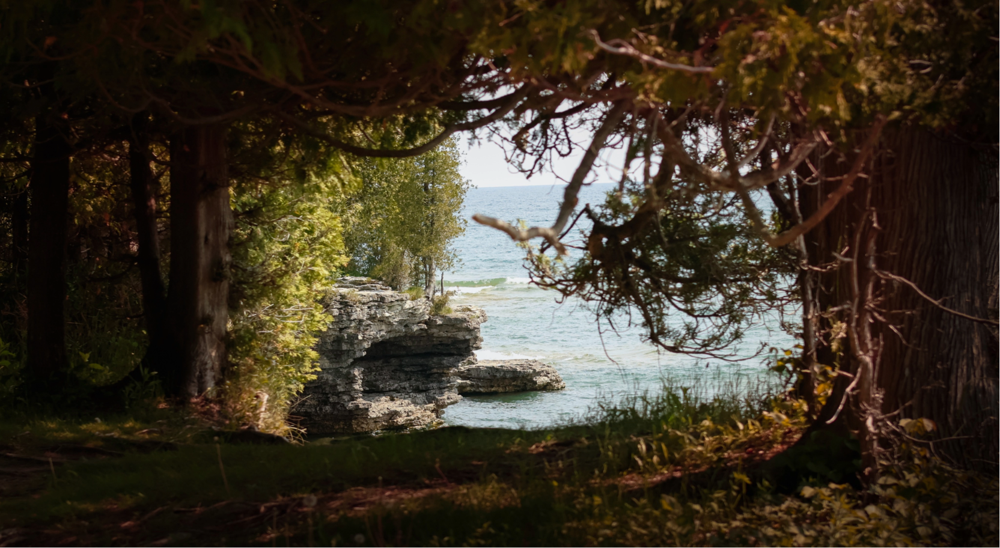
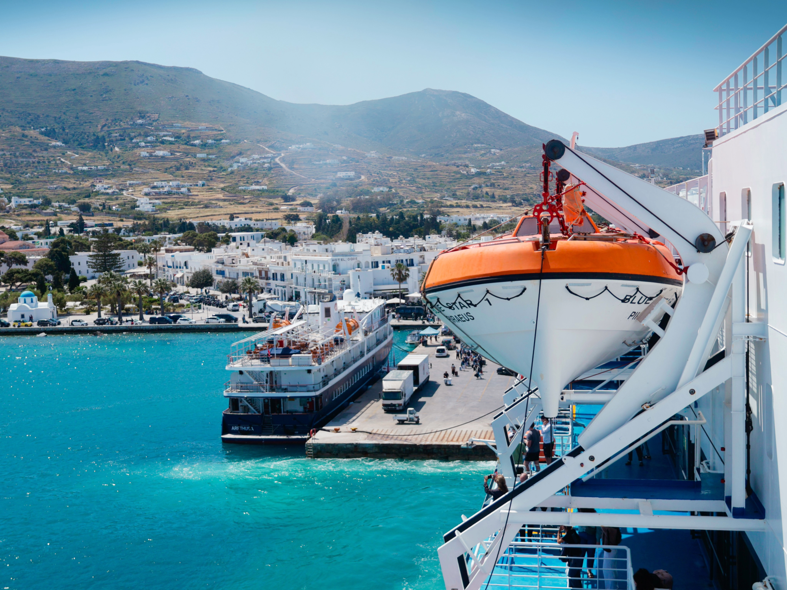
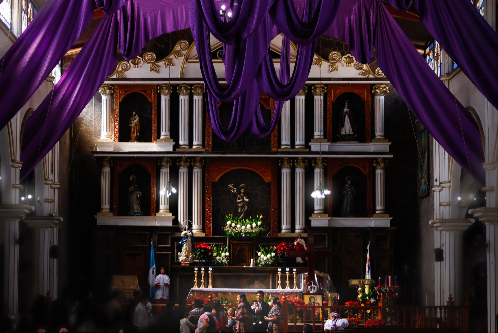
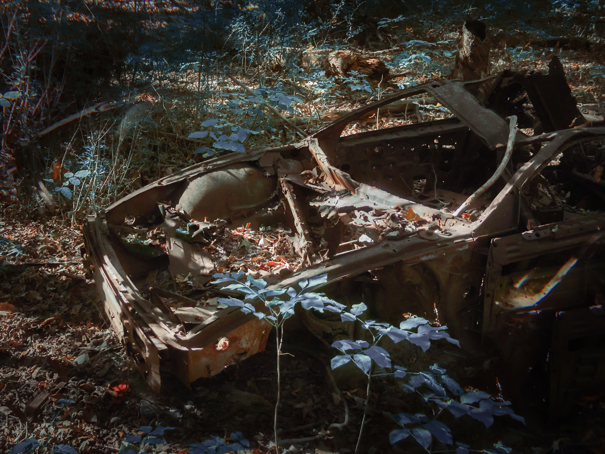

"Door County, WI: Cliff Shore", Personal Project, Adobe Lightroom. Photographed to capture a memorable vacation using the rule of thirds, a warm color tone, and a symetrical composition

"Ferry at a Paros Harbor" North Central College photo contest, Adobe Lightroom. Photographed with a high color contrast, and asymetric composition to eventually recieve the winnings for the "place" category of NCC's summer semester study abroad photo contest

"Church in San Jose winter", Personal Project, Adobe Lightroom. Photographed with semetrical composition, and asymetrical light balance for North Central College's Coffee Lab

"Chasis in the woods", Photo essay 1, Adobe lightroom and Photoshop. Photographed for NCC's digital photography class using low contrast, hue shifts, and a visual heirarchy